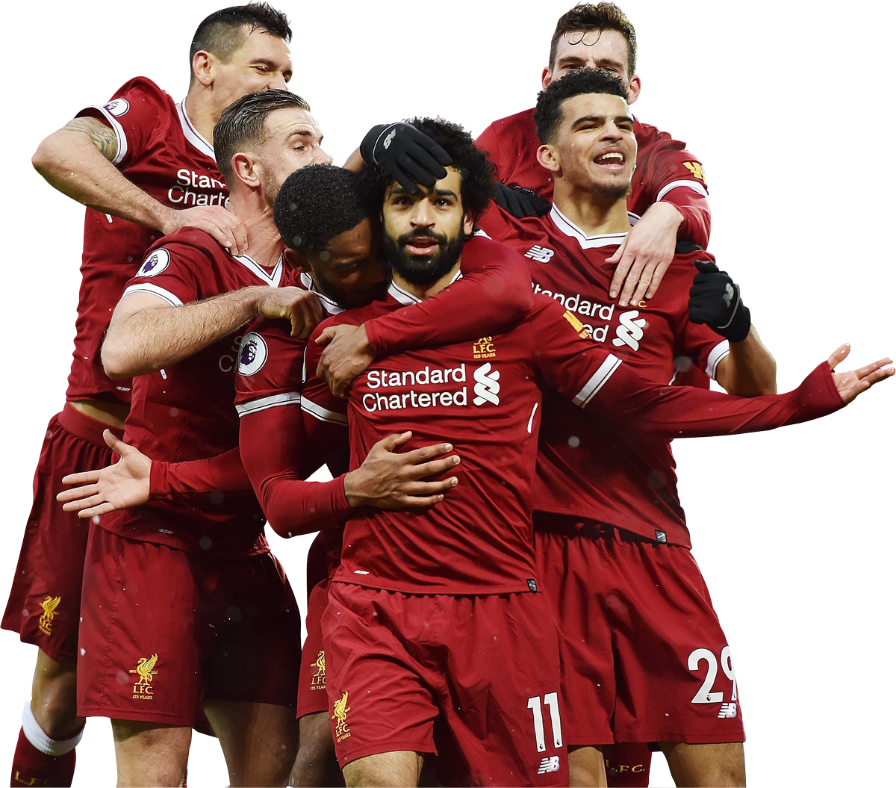

Virgil van Dijk (born 8 July 1991)
is a Dutch professional footballer who plays as a centre-back for Premier League club Liverpool and the Netherlands national team.
Considered one of the best defenders in the world,
Van Dijk is known for his strength, leadership and aerial ability. He is the only defender to win UEFA Men's Player of the Year, and has finished runner-up for the Ballon d'Or and Best FIFA Men's Player.

Mohamed Salah Hamed Mahrous Ghaly, born 15 June 1992 , is an Egyptian professional footballer who plays as a forward for Premier League club Liverpool and captains the Egypt national team. Considered one of the best players in the world and amongst the greatest African players of all time, he is known for his finishing, dribbling, and speed.